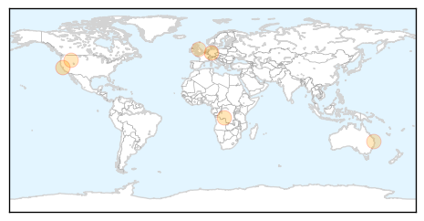

Measles
30-Day Web Trend
0 alerts, 2 warnings
30-Day Twitter Trend
0 alerts, 0 warnings

Article Locations
Article Confidences
Top Articles:
- 0.957
- Man excretes polio virus for nearly three decades despite being vaccinated
- 0.931
- Berkeley health care officials hope more vaccinations stop spread of measles
- 0.843
- DRC: Katanga measles outbreak grows, ‘We need more actors in the field’ MSF exclaims
- 0.786
- Some U.S. States Still Have Low Vaccination Coverage, High Exemption Rates
- 0.761
- University student with measles visits Queen Street Mall, Spring Hill and St Lucia
- 0.702
- The Vaccine Controversy: Some Important Things to Know
Top Tweets:
-
No tweets found for Sep 02, 2015
Mumps
30-Day Web Trend
3 alerts, 0 warnings

30-Day Twitter Trend
1 alerts, 0 warnings

Article Locations

Article Confidences

Top Articles:
-
No articles found for Sep 02, 2015
Top Tweets:
-
No tweets found for Sep 02, 2015